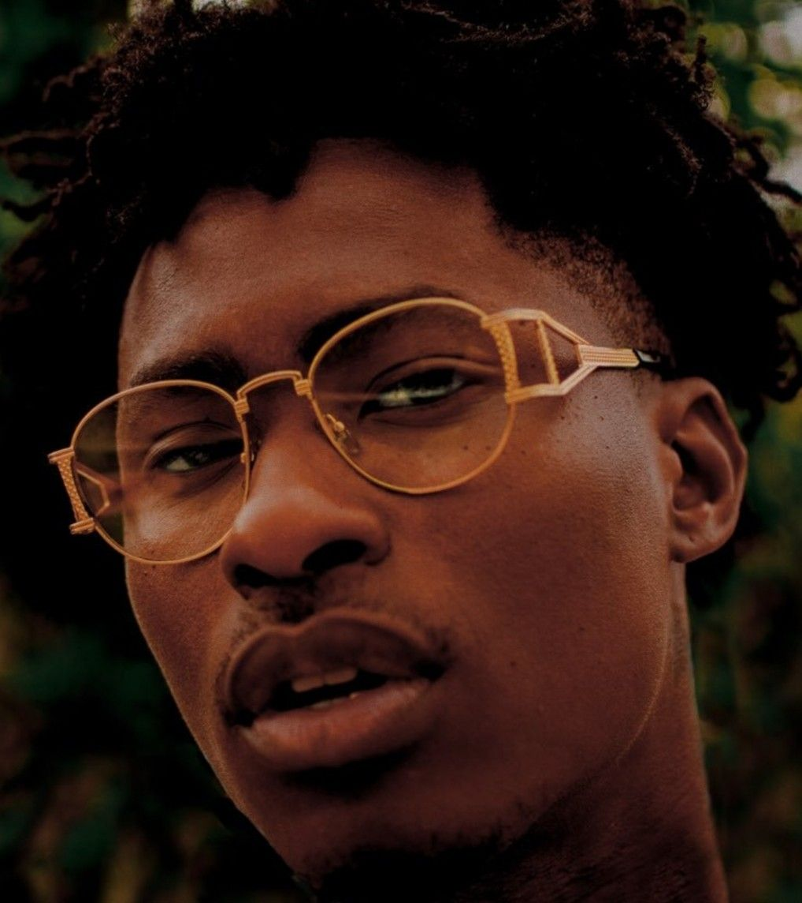

Lucky Daye is an upcomming R&B artist who is also known for remaking late 2000's R&B songs.

Born David Debrandon Brown, Lucky Daye is originally from New Orleans, Louisiana. Raised in a cult that forbade secular music,
he nonetheless discovered an innate knack for singing. After his mother left the cult, Brown immersed himself in classic R&B and eventually fell
particularly hard for the likes of Stevie Wonder and Rick James. Uprooted by Hurricane Katrina, he moved to Tyler, Texas, but soon relocated to Atlanta, Georgia to pursue
music. He established himself as a songwriter and background vocalist, and across 2008 and 2009, landed credits on material by Keith Sweat (a handful of cuts on Just Me) and Ne-Yo
(“She Got Her Own”). Brown wasn’t as active the next few years — he did write for Boyz II Men (“Believe Us”) — though he shifted gear during the latter half of the 2010s.
During 2016 and 2017, he co-wrote songs released by Keke Palmer (“Enemiez”), Ella Mai (“10,000 Hours,” “Down”), Trey Songz (“Song Goes Off”),
and Mary J. Blige (including two tracks off Strength of a Woman), among other contemporary R&B artists. Signed as a recording artist to the RCA-
supported Keep Cool label, Brown — by then living in Los Angeles — made his debut as Lucky Daye in 2018